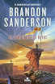

El archivo de las tormentas
El archivo de las tormentas es una serie de novelas de fantasía épica escrita por el autor estadounidense Brandon Sanderson.
El primero (de 10 volúmenes planificados) es El camino de los reyes, se publicó el 31 de agosto de 2010. El segundo, Palabras radiantes, se publicó el 4 de marzo de 2014. El tercero, Juramentada, se publicó el 14 de noviembre de 2017. El cuarto libro de la saga, El ritmo de la guerra, se espera que vea la luz el 17 de noviembre de 2020 en su versión en inglés y la misma semana en su versión en Español.
Se planean diez libros en la serie, divididos en dos conjuntos de cinco libros cada uno. Sanderson describe el arco de la historia planificada del segundo conjunto de cinco libros como una "secuela" del primer conjunto, con algunas apariciones de personajes del primer conjunto. Se planea que el cuarto libro tenga lugar un año después de los eventos de Juramentada. El mayor salto de tiempo en la serie ocurrirá entre el quinto y el sexto libro.
-  El camino de los reyes
- Palabras radiantes
- Danzante del filo
- Juramentada
- El ritmo de la guerra